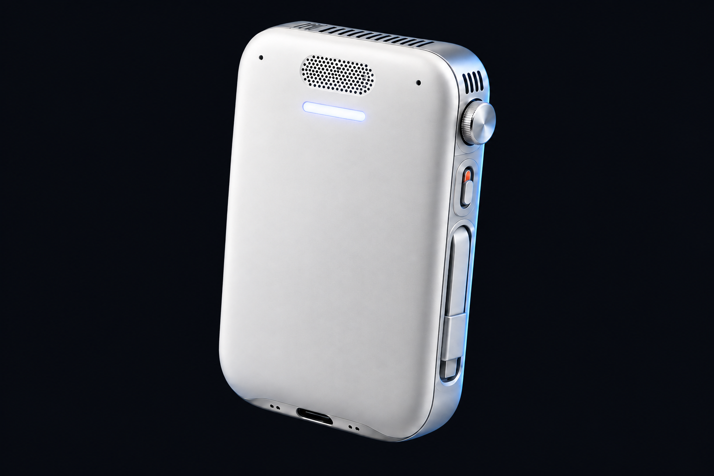
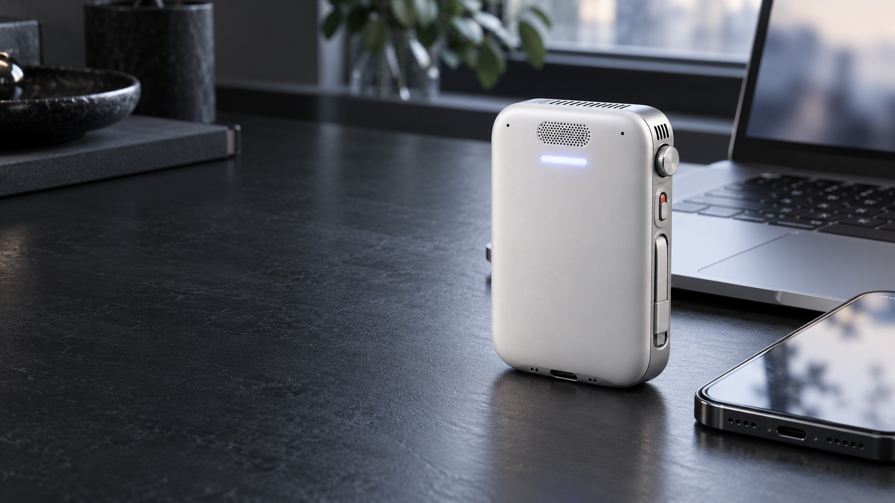
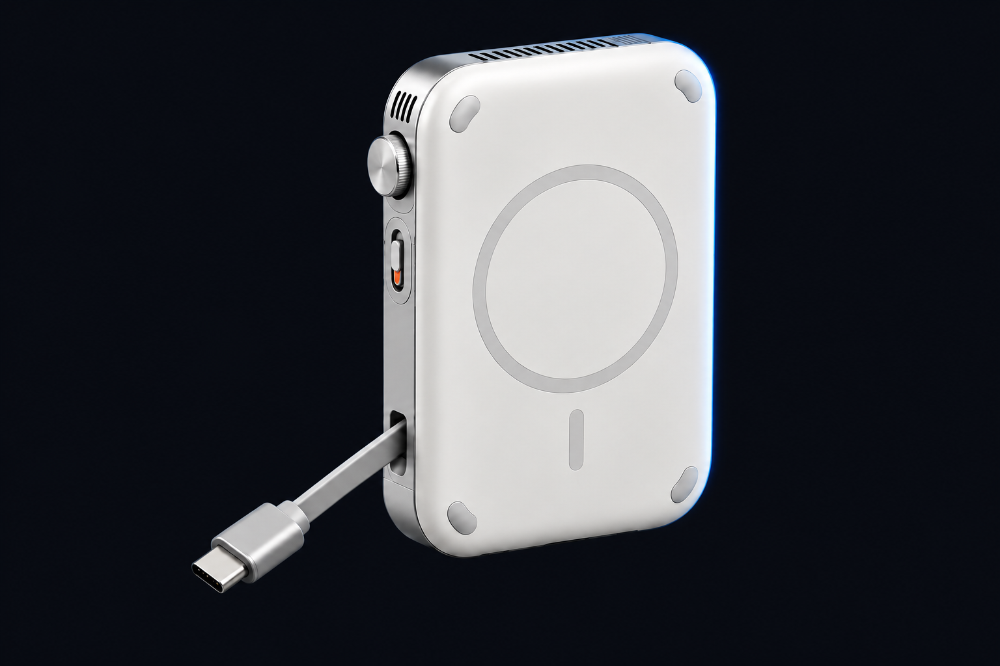

Find an answer worth using.
Compare choices using current sources. Keep the evidence and the unknowns visible.
MEET MOB · IN DEVELOPMENT
A pocket computer designed to run your AI locally. Speak a task. Review the work on your iPhone. Reach the devices you choose.
Concept & feasibility. No integrated prototype validated yet.

A PERSONAL COMPUTER FOR YOUR AI
Its own local model, speech, memory, browser and command tools. An iPhone companion for permissions and review. These are intended experiences, not live product demonstrations.
Compare choices using current sources. Keep the evidence and the unknowns visible.
Run a scoped command on an enrolled machine. Review the result and choose the next step.
Prepare work from selected project files. Review and edit it before approving external sending.

DESIGNED TO STAY WITH YOU
Local compute. Physical controls. Your world, within reach.
Concept imagery. Final hardware has not been validated.
INTENTION IN THE DETAILS

Serviceable USB-C is the primary charging and sustained-power path. Magnetic mounting and wireless charging are design targets.
A microphone cutoff for listening. A separate cancel control for running tasks. Device access needs an approved adapter and OS permissions.
Calls, model performance and twelve-hour mixed-use runtime need measured validation. Retail price and shipment dates are uncommitted.
Read the engineering plan ↗THE PATH TO REAL
Component choices. Supplier outreach. User research planning.
Local voice and tools, real output, measured power and thermals.
Repeat use and costed manufacturing. Working prototype footage before crowdfunding.
For early users, engineering partners and investors who want to help turn the vision into evidence.